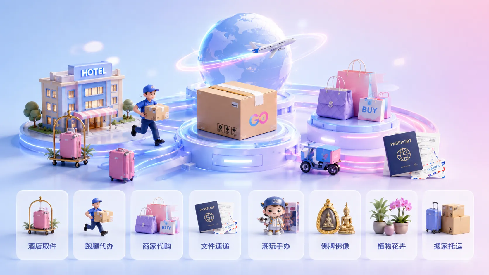

直接答案：泰国寄中国怎么清关？
泰国寄中国清关分包税和不含税两种方式：包税指报价中包含清关相关费用，不含税指清关相关费用按实际产生另计或由收件方按规定处理。两种方式没有统一的好坏，要按货物类型、申报价值、目的地与当期线路确认。发货前备齐货物资料、提前确认品类可寄要求，是清关顺利最直接的办法。
包税与不含税对照
| 项目 | 包税 | 不含税 |
|---|---|---|
| 费用包含 | 报价中包含清关相关费用，按整票条件核算 | 清关相关费用按实际产生另计，或由收件方按规定处理 |
| 需要提供的资料 | 货物照片、品名、数量、重量、外箱尺寸、申报价值、收件信息 | 同左；特殊品类同样需要补充资料 |
| 适合货物 | 个人物品、游客行李、一般特产与普通货物 | 按货物与目的地确认，商业货物需单独确认 |
| 注意事项 | 发货前问清报价包含哪些费用 | 发货前问清哪些费用另计，避免到付争议 |
两种方式的具体费用构成与包含范围没有固定标准，都要按货物与目的地确认。运费按计费重量与整票条件核算，见泰国寄中国运费说明；常规时效见泰国寄中国时效说明。
清关需要准备什么文件和资料？
第一，货物照片：外包装与内装物品的清晰照片，用于确认品名与状态。第二，品名与数量：每种货物的中文品名、数量与规格，写清楚不写简称。第三，重量与尺寸：实际重量与外箱长宽高，用于核算计费重量。第四，申报价值：与货物实际情况一致的申报价值。第五，收件信息：中国收件人、电话与收货地址。第六，按品类补充的资料：食品提供配料与保质期信息，电子产品提供电池类型与数量，佛牌提供材质与价值信息，燕窝、植物、宠物、药品等按品类要求补充资料。资料齐全、信息一致，清关等待较短；资料不全需要补充证明时，总时效会延长。
不同品类清关有什么特殊要求？
食品与零食：看配料、保质期、原包装、数量与用途，个人少量与商业批量按不同规则处理，先审核再发货。电子产品与带电货物：看电池类型、数量、价值与包装，带电产品发货前必须审核。佛牌与佛教用品：看材质、尺寸、价值以及是否属于特殊文物类物品，提前确认。燕窝、植物、宠物、药品：属于监管较严的品类，都要逐票审核、以海关最新规定为准，不承诺所有货物都可以寄。液体、粉末、膏体与喷雾：按成分、形态与包装逐票审核。拿不准的品类先看泰国寄中国禁运清单，再发照片与资料确认。
清关要多久？会影响总时效吗？
清关时间包含在常规时效内：空运 5-7 天，陆运 10-15 天。资料齐全、品名与数量清楚、申报价值一致，清关等待较短；资料不全、需要补充证明或遇到海关查验时，总时效会延长。发货前备齐资料、提前确认可寄品类，是缩短等待最直接的办法。海运服务暂未开放，目前主做空运与陆运。
怎么开始
第一步，提供货物信息：货物照片、品名、数量、重量与外箱尺寸。第二步，提供路线信息：泰国取件地址与中国收货地址，说明是否需要上门取件。第三步，确认清关与报价：审核后确认包税或不含税方式、运输方式与预计时效，再安排发货。小包与文件可走泰国寄中国快递，旅游购物可咨询泰国上门取件。
常见问题
泰国寄中国包税和不含税有什么区别？
包税指报价中包含清关相关费用，按整票条件核算；不含税指清关相关费用按实际产生另计或由收件方按规定处理。具体采用哪种方式、包含哪些费用，要按货物类型、申报价值、目的地与当期线路确认，发货前先问清再发货。
泰国寄中国清关需要准备哪些文件？
一般需要货物照片、品名、数量、重量、外箱尺寸、申报价值与中国收件信息。食品、电子产品、佛牌等特殊品类可能需要补充配料、成分、电池信息或材质价值等资料，具体按货物确认。资料齐全、信息一致，清关等待较短。
食品、电子产品清关有什么特殊要求？
食品要看配料、保质期、原包装、数量与用途；电子产品要看电池类型、数量、价值与包装；佛牌要看材质、尺寸、价值以及是否属于特殊文物类物品。特殊品类都要先审核，不能直接承诺可寄，具体以审核结果与海关最新规定为准。
泰国寄中国清关要多久？
清关时间包含在常规时效内：空运 5-7 天，陆运 10-15 天。资料齐全、品名与数量清楚、申报价值一致，清关等待较短；资料不全、需要补充证明或遇到海关查验时，总时效会延长。发货前备齐资料可以减少等待。
海关查验或需要补充资料怎么办？
按海关或承运方要求补充资料、配合核查即可。发货前备齐货物照片、品名、数量与收件信息，特殊品类提前确认可寄要求，可以减少查验与补充资料的等待。具体以实际情况为准。
更新于 2026-11-26